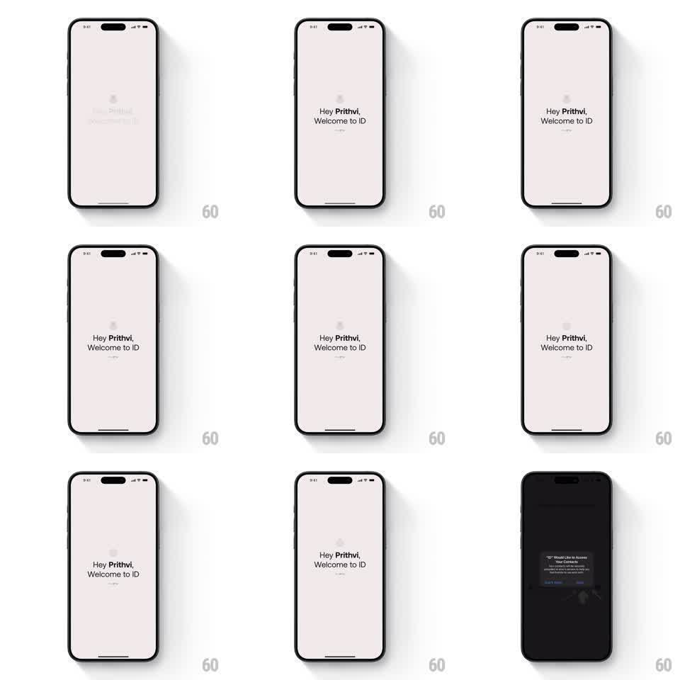

Media
Frame-by-frame

Rebuild this animation 1:1: ID's splash - a pale pink screen where the personal welcome line fades in under a ghosted logo, holds, then crossfades to the dark onboarding screen just as the system contacts-permission alert pops up.

Rebuild this animation 1:1: ID's splash - a pale pink screen where the personal welcome line fades in under a ghosted logo, holds, then crossfades to the dark onboarding screen just as the system contacts-permission alert pops up.
## Integration
Integration: stack-agnostic spec - springs given as stiffness/damping, timed motions as duration + curve; map every value to your framework and animation library of choice.
## Scene
Solid pale pink screen. A faint, oversized ID logo watermark sits above center. The welcome text fades in at center: "Hey Prithvi," over "Welcome to ID" in dark type, with a small gray sub-line. The exit state is a dark onboarding screen with a helper graphic, overlaid by the iOS contacts permission alert ("ID" Would Like to Access Your Contacts, Don't Allow / Allow).
## Motion spec
Pattern: welcome-text fade-in with a hard cut into a system alert.
- The welcome lines fade in together (500ms, ease-out) over the watermark logo - no slide, no stagger.
- Hold ~2s.
- Crossfade (300ms) to the dark onboarding screen; the background inverts pink to near-black.
- The system permission alert scales in on top (standard iOS presentation: scale 1.1 to 1.0 + fade, ~200ms) while the onboarding graphic settles behind it.
## Calibration
- The welcome text is the only moving element on the pink screen; animating the watermark competes with it.
- Keep the hold short - the splash is a greeting, not a brand moment.
## Reduced motion
Same sequence; the alert appears without its scale.
## Don't miss
- The pink is pale and warm, not saturated - it should read as paper, not neon.
- The permission alert is a real system dialog: match the platform's presentation rather than rebuilding it.